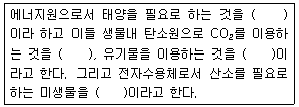
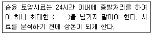
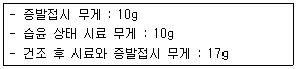
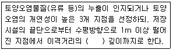
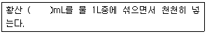
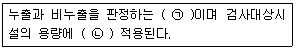

토양환경기사 (2020-06-06 기출문제)
1과목: 토양학개론
1. 산성우의 토양에 대한 영향으로 가장 거리가 먼 것은?
- 양이온, 주로 Ca2+, Mg2+의 용탈 증대
- HCO3-농도의 감소
- AISO4의 침전에 의한 토양 용액의 PO4 농도의 증가
- Zn, Cd 등의 중금속이 토양 용액으로 용출
(정답률: 73%)

2. 토양수분장력 중 응집력에 대한 설명으로 맞은 것은?
- 고체-액체 계면의 토양입자와 물분자간에 작용하는 장력
- 고체-액체 계면의 토양입자들 간에 작용하는 장력
- 고체-액체 계면의 물분자와 계면에서 더 떨어진 물분자들 간에 작용하는 장력
- 고체-액체 계면의 물분자와 공극 내 가스상 물질의 분자들 간에 작용하는 장력
(정답률: 75%)
3. 영양물질 중 지중으로 용탈(leaching)되기 가장 쉬운 형태는?
- NO3-
- N2O
- NH4+
- PO43-
(정답률: 74%)
4. 무기물표층으로 광물 토양과 혼합된 부식물이 존재하며 층위는 흑색을 띄고 생물 활동이 가장 활발하게 행해지는 층은?
- O층
- A층
- B층
- C층
(정답률: 73%)
5. 유해중금속물질인 카드뮴이나 납으로 오염된 농경지에서 실시하는 대책방법 중 가장 적합하지 않은 것은?
- 오염토양의 배토 및 객토
- 토양환원의 촉진
- 석회물질의 투여
- 미생물 농약살포
(정답률: 76%)
6. 건조된 토양 20g을 1mm 체눈크기의 체로 걸러서 체위에 15g이 남았다. 이 체위에 남은 토양을 손으로 잘게 가루를 내어 물속에서 걸렀더니 3g이 남았을 때 입단화도(%)는?
- 60.5
- 70.6
- 80.7
- 90.8
(정답률: 53%)
7. 토양오염의 특징 중 가장 거리가 먼 것은?
- 오염경로의 다양성
- 오염영향의 국지성
- 피해발현의 완만성
- 생체독성 발현의 긴박성
(정답률: 79%)
8. 토양 수분의 종류가 아닌 것은?
- 결합수
- 흡습수
- 모세관수
- 표면장력수
(정답률: 79%)
9. 지하수의 주요 오염원 중 비점오염원에 해당되는 것은?
- 지하저장탱크
- 산성비
- 쓰레기 매립장
- 정화조
(정답률: 92%)
10. 다음 ( )에 내용을 순서대로 나열한 것은?

- 광합성 미생물 - 독립영양 미생물 - 종속영양 미생물 - 호기성 미생물
- 화학합성 미생물 - 독립영양 미생물 - 종속영양 미생물 - 호기성 미생물
- 광합성 미생물 - 종속영양 미생물 - 독립영양 미생물 - 호기성 미생물
- 화학합성 미생물 - 종속영양 미생물 - 독립영양 미생물 - 혐기성 미생물
(정답률: 86%)
11. 다핵 방향족 탄화수소(PAH) 중 벤젠핵의 개수가 가장 적고 생물분해가 용이한 것은?
- Pyrene
- Phenanthrene
- Antracene
- Naphthalene
(정답률: 77%)
12. 자유면 대수층에서 지하수면의 단위 상승 혹은 강하에 의해 자유면 대수층의 저류지하수로부터 단위 면적을 통해 유입 혹은 유출되는 물의 부피를 나타내는 지하수 및 대수층 관련 용어는?
- 비피압저류계수
- 비저류계수
- 수두산출률
- 대수저류계수
(정답률: 49%)
13. 토양의 양이온 농도가 다음과 같을 때 이 토양의 나트륨 흡착비(SAR)는? (단, Ca2+=4meqㆍL-1, Mg2+=4meqㆍL-1, Na+=18meqㆍL-1)
- 7
- 9
- 11
- 14
(정답률: 85%)
14. 다음 중 이온교환효율이 큰 순서로 옳은 것은?
- Li ＞ Rb ＞ Na ＞ K
- K ＞ Rb ＞ Li ＞ Na
- Na ＞ Li ＞ K ＞ Rb
- Rb ＞ K ＞ Na ＞ Li
(정답률: 82%)
15. 토양생성작용 중 토양무기성분이 산성부식질의 영향으로 분해되어 Fe, Al까지도 하층으로 이동시켜 토양이 생성되는 작용으로 염기공급이 안되고 배수가 잘될 때 촉진되는 작용은?
- 포드졸화 작용
- 글레이화 작용
- 석회화 작용
- 염류화 작용
(정답률: 71%)
16. 토양 및 지하수내 질산염과 질소에 관한 내용으로 틀린 것은?
- 질산염 농도가 높은 물은 영유아에게 청색증을 유발할 수 있다.
- 질산염은 탄산염과 같이 물을 끓여 제거할 수 있다.
- 토양 및 지하수계 내에서 질소 원소는 미생물에 의해 산화, 환원반응을 한다.
- 지하수환경 내에서 NO2-의 함량은 소량이다.
(정답률: 73%)
17. montmorillonite가 수분을 흡수하면 가장 심하게 팽창할 것으로 판단되는 토양은?
- 바다 속에서 채취한 montmorillonite 토양
- 부식을 다량 함유한 montmorillonite 토양
- 석회를 다량 함유한 montmorillonite 토양
- 다량의 중금속으로 오염된 광산 주변의 montmorillonite 토양
(정답률: 64%)
18. 토양의 공극률(porosity) 측정을 위해 토양 60cm3을 채취하여 고형입자 부피와 수분 부피를 측정 하였더니 각각 36cm3와 12cm3였다. 이 지역 토양의 공극률(%)은?
- 50
- 40
- 30
- 20
(정답률: 65%)
19. 토양오염물질의 거동 특성을 나타내는 인자와 가장 거리가 먼 것은?
- 옥탄올/물분배계수
- 헨리상수
- 분해상수
- 우물 함수
(정답률: 79%)
20. 자유면 대수층이 발달한 지역에서 공극률이 0.3, 비산출률이 0.3, 유역면적이 150km2이며 수위강하를 6m만 허용할 때 지하수 개발 가능량(m3)은? (단, 자유면 평균 두께 = 100m)
- 2.7×107
- 2.7×108
- 8.1×107
- 8.1×108
(정답률: 53%)
2과목: 토양 및 지하수 오염조사기술
21. 토양 내 수분 함량 측정을 위한 시료 관리에 관한 내용으로 ( )에 옳은 것은?

- 2일
- 3일
- 5일
- 7일
(정답률: 78%)
22. 황산용액(1→1000)로 표시된 수용액의 농도(ppm, W/V)는? (단, 순수한 황산의 비중 = 1.84)
- 1.84
- 18.4
- 184
- 1840
(정답률: 66%)
23. 원자흡수분광광도법 적용 시 사용되는 다음의 용어의 설명으로 옳지 않은 것은?
- 공명선(Resonance line) : 원자가 외부로부터 빛을 흡수했다가 다시 먼저 상태로 돌아갈 때 방사하는 스펙트럼선
- 다원료 불꽃(Fuel-rich Flame) : 조연성 가스/가연성 가스의 비를 크게 한 불꽃
- 중곡음극 램프(Hollow Cathode Lamp) : 원자흡수분광광도법의 광원이 되는 것으로 목적원소를 함유하는 중곡음극 한 개 또는 그 이상을 저압의 네온과 함께 채운 방전관
- 분무기(Nebulizer or Atomizer) : 시료를 미세한 입자로 만들어 주기 위하여 분무하는 장치
(정답률: 70%)
24. 대기압보다 낮은 진공압을 작용시켜 일정시간 유지하고, 압력유지시간동안 누출검사대상 시설의 압력변화를 측정함으로서 일정체적을 가진 누출검사대상시설 및 기상부에 접속된 부속배관의 누출여부를 판단하는 시험법은?
- 가압시험법
- 미가압시험법
- 미감압시험법
- 감압시험법
(정답률: 54%)
25. 시료에 염화제일주석을 넣어 금속수은으로 환원시킨 다음 이 용액에 통기하여 발생되는 수은증기를 이용하여 수은을 정량하는 방법은?
- 유리전극법
- 냉증기 원자흡수분광광도법
- 자외선/가시선 분광법
- 유도결합플라스마-원자발광분광법
(정답률: 80%)
26. 초음파 추출법을 사용하여 시료 추출을 수행하는 화합물은?
- BTEX
- TPH
- 페놀
- TCE
(정답률: 58%)
27. 실험의 일반적 내용으로 틀린 것은?
- ‘약’이라 함은 기재된 양에 대하여 ±10% 이상의 차가 있어서는 안된다.
- 시험에 사용하는 물은 따로 규정이 없는 한 정제수 또는 탈염수를 말한다.
- 용액의 농도를 % 로만 표시할 때는 W/W% 또는 V/V%를 뜻한다.
- 정량한계는 지정된 시험방법에 따라 시험하였을 경우 그 시험방법에 대한 최소 정량한계를 의미하며, 그 미만은 불검출된 것으로 간주한다.
(정답률: 76%)
28. 임의의 시료에 대해 수분(%)측정 실험의 결과가 다음과 같을 때 시료의 수분(%)은?

- 40
- 30
- 20
- 15
(정답률: 80%)
29. 비소표준원액 제조 시 사용하는 비소화합물은?
- 삼산화비소
- 오산화비소
- 아비산나트륨
- 비소이온
(정답률: 55%)
30. 토양오염관리대상시설지역에서의 시료채취지점선정에 관한 내용으로 ( )에 옳은 것은? (단, 부지 내, 지상저장시설 기준)

- 1.2배
- 1.5배
- 2.0배
- 2.5배
(정답률: 85%)
31. 토양시료의 분석에 필요한 2N 황산용액을 조제하고자 할 때 가장 적절한 방법으로 ( )에 알맞은 것은? (단, 95% 황산, 황산의 비중 = 1.84g/mL)

- 60
- 120
- 180
- 240
(정답률: 63%)
32. 저장물질이 있는 누출검사대상시설(액상부의 시험법)의 누출판전기준에 관한 내용으로 ( )에 옳은 것은?

- ㉠ 누출량, ㉡ 관계없이 일괄
- ㉠ 누출량, ㉡ 따라 차등
- ㉠ 누출속도, ㉡ 관계없이 일괄
- ㉠ 누출속도, ㉡ 따라 차등
(정답률: 53%)
33. 토양 중의 폴리클로리네이티드비페닐(PCB)을 기체크로마토그래피로 분석할 때 가장 적당한 검출기는?
- 열전도도 검출기(TCD)
- 불꽃이온화 검출기(FID)
- 전자포착형 검출기(ECD)
- 불꽃광도형 검출기(FPD)
(정답률: 70%)
34. 원자흡수분광광도계 장치의 구성이 옳은 것은?
- 광원부-파장선택부-시료부-측광부
- 광원부-시료원자화부-파장선택부-측광부
- 시료부-광원부-파장선택부-측광부
- 시료원자화부-광원부-단색화부-측광부
(정답률: 67%)
35. 시안-자외선/가시선 분광법 측정에 대한 설명으로 틀린 것은?
- 토양 중 시안의 정량한계는 0.2mg/kg이다.
- 시안화합물을 측정할 때 방해물질들은 증류하면 대부분 제거된다.
- 황화합물이 함유된 시료는 아세트산 아연용액(10%) 2mL를 넣어 제거한다.
- 다량의 지방성분을 함유한 시료는 pH4이하로 조절한 후 노말헥산으로 추출하여 제거한다.
(정답률: 59%)
36. 일반지역에서 시료채취지점 선정방법이 잘못된 경우는?
- 농경지의 토양시료 중에 카드뮴을 측정하기 위해 시료를 채취할 경우 대상지역 내에서 지그재그형으로 5~10개 지점을 선정한다.
- 공장지역의 토양시료 중에 카드뮴을 측정하기 위해 시료를 채취할 경우 대상지역의 중심이 되는 1개 지점과 주변 4방위의 5~10m거리에 있는 1개 지점씩 총 5개 지점을 선정한다.
- 농경지의 토양시료 중에 석유계총탄화수소를 측정할 경우 대상지역 내에서 대표치를 구할 수 있는 1개 지점을 선정한다.
- 공장지역의 토양시료 중에 BTEX를 측정할 경우 대상지역의 중심이 되는 1개 지점과 주변 4방위의 5~10m 거리에 있는 1개 지점씩 총 5개 지점을 선정한다.
(정답률: 49%)
37. 석유계총탄화수소(TPH)의 측정을 위해 기체크로마토그래프의 검출기로 적절한 것은?
- 광이온화검출기(Photo Ionization Detector : PID)
- 불꽃이온화검출기(Flame Ionization Detector : FID)
- 열전도도 검출기(Thermal Conductivity Detector : TCD)
- 전자포획형 검출기(Electron Capture Detector : ECD)
(정답률: 74%)
38. 액체성분 20mL을 300mL의 용매에 녹였을 때 액체의 농도를 표현하는 것으로 가장 적절한 것은?
- (20→300)
- (20→320)
- (0.02→0.3)
- (0.02→0.32)
(정답률: 64%)
39. 누출검사대상시설에 담겨 있는 액상부의 탱크용량에 따른 누출량의 합격 판정치로 옳은 것은?
- 10만리터 초과 100만리터 이하의 경우 누출율 1.0L/hr 이하
- 100만리터 초과 160만리터 이하의 경우 누출율 1.2L/hr 이하
- 160만리터 초과 320만리터 이하의 경우 누출율 1.6L/hr 초과
- 320만리터 초과 480만리터 이하의 경우 누출율 2.4L/hr 초과
(정답률: 61%)
40. 토양오염 위해성 평가 수행 절차 중 가장 먼저 수행하여야 하는 단계는?
- 위해도 결정
- 노출 농도 결정
- 조치 계획 작성
- 정화목표치 설정
(정답률: 53%)
3과목: 토양 및 지하수 오염정화 기술
41. 토양의 열처리 기술 중 열스크루 공정에 대한 설명으로 틀린 것은?
- 열스크루 장치는 장치 용적에 비해 열전달 표면적이 비교적 넓다.
- 열스크루 공정의 열전달 유체는 직접연소 또는 전기적 장치에 의해서 가령된다.
- 열스크루 공정은 고형물의 온도가 최대 허용 가능한 열전달 유체의 온도에 의해 제한된다.
- 열스크루 장치는 같은 용량의 장치에 비해 장치가 크고 열전달효율이 낮은 단점이 있다.
(정답률: 77%)
42. 오염토양정화 기술 중 저온열탈착공법의 특징에 대한 설명으로 틀린 것은?
- 오염토양 내 TPH 농도가 높을수록 열량이 높아 적용성이 좋다.
- 토양 내 함수율이 높으면 에너지소모량이 많아져 전처리가 요구된다.
- 오염토가 지하 8m 이하에 위치하는 경우에는 토공비용의 상승으로 경제성이 낮아진다.
- 토양 내 자갈 등 조대물질이 존재하는 경우에는 선별 등 전처리가 필요하다.
(정답률: 70%)
43. Air Sparging법의 영향인자에 대한 설명 중 틀린 것은?
- 처리 대상 오염물질의 Henry 상수는 10-5atmㆍm3/mol 이상일 때 유리하다.
- 오염물질의 증기압(mmHg)이 15 이상이면 효과적이고, 15 미만이면 불리한 조건이다.
- 토양의 foc값(%)은 2 이하 일 때, 오염물질의 용해도는 낮을 때 유리하다.
- 자유면 대수층, 단열이 많은 기반암에서 유리하다.
(정답률: 42%)
44. 토양증기추출법을 지하수위가 높은 경우에 적용할 때 발생할 수 있는 문제점이 아닌 것은?
- 진공 압력에 의한 지하수위 상승
- 관정 스크린 막힘 현상
- 토양 공극의 확장 현상
- 공기 흐름의 감소
(정답률: 74%)
45. 슬러리월의 역할과 가장 거리가 먼 것은?
- 오염되지 않은 지하수를 오염된 지역으로 부터 격리시킨다.
- 지하로의 침출수흐름을 제어한다.
- 오염물질의 지체효과를 증진시킨다.
- 투수성 슬러리를 적용하여 오염물질의 분해를 증진시킨다.
(정답률: 58%)
46. 식물정화법의 주처리 기작에 대한 설명으로 틀린 것은?
- 식물에 의한 추출
- 식물에 의한 분해
- 식물에 의한 확산
- 식물에 의한 안정화
(정답률: 75%)
47. 오염토양의 처리방법인 토양세척의 주요 6개 공정에 해당되지 않는 것은?
- 흡착
- 분리
- 처리수 정화
- 미세토양 처리
(정답률: 69%)
48. 점토토양에 대한 Trichlorobenzene의 분배계수(partition coefficient. Kp)가 8.3cm3/g이고 점토 토양의 건조밀도(pd)가 1.6g/cm3이고 공극률(n)이 0.4인 경우 지연계수(R)는?
- 2.075
- 3.075
- 33.2
- 34.2
(정답률: 31%)
49. White Rot Fungus 기술의 제약조건과 가장 거리가 먼 것은?
- 중간물질 형성
- 화학적 흡착
- 박테리아의 수
- 독성물질
(정답률: 40%)
50. 지하수 오염운에서 자연저감이 일어나고 있을 때 배경보다 높은 값을 나타내는 것은?
- 질산염 농도
- 산화환원포텐셜
- 황산염 농도
- 알칼리도
(정답률: 47%)
51. 오염토양의 생물통기법 적용가능성을 판단하기 위해 실시하는 호흡률 측정방법에 대한 설명으로 틀린 것은?
- 미생물호흡률 측정은 일반적으로 50시간 정도 실시한다.
- 호흡률 측정 결과가 1%/day 이하인 경우에 적용성이 우수한 것으로 판단한다.
- 호흡률 측정은 초기에는 2시간 간격으로 실시하고 점차 간격을 늘려 간다.
- 산소농도가 5% 미만이거나 더 이상 감소되지 않을 때까지 실시한다.
(정답률: 70%)
52. 바이오벤팅(bioventing)법에 대한 설명으로 가장 거리가 먼 것은?
- 기존의 토양증기추출법보다 공기 추출량이 적다.
- 대상 오염부지에 대한 정확한 산소소모율을 계산하여 공기량을 조절한다.
- 분자량이 다소 큰 준휘발성 유기오염물질 제거에 토양증기추출법보다 효과가 있다.
- 토양 내 유기오염물 농도가 높아서 NAPLs이 다량 존재하는 오염부지에 바이오벤팅 효과가 높다.
(정답률: 51%)
53. 생물학적 복원기법에서 생물분해 효율을 높이는 방법으로 가장 알맞은 것은?
- 수소 주입, 영양소 주입, 미생물활동 억제
- 산소 주입, 영양소 주입, 미생물활동 조성
- 메탄 주입, 영양소 추출, 미생물활동 조성
- 산소 주입, 영양소 주입, 미생물활동 억제
(정답률: 85%)
54. 분자식이 C6H12O6인 포도당 300g이 완전 산화할 때 소모되는 이론 산소량(g)은?
- 약 130
- 약 180
- 약 280
- 약 320
(정답률: 59%)
55. 불포화 토양 내 오염물질의 농도가 4mg/kg이었으며 이와 평형상태인 토양공기 내 오염물질농도는 200mg/m3이었다. 전체 오염물질의 양 mg/m3은? (단, 토양단위용적밀도= 1.7kg/L, 공기부피비 = 0.6)
- 6920
- 7920
- 8920
- 9920
(정답률: 55%)
56. 생물학적 복원공정에서 유기 화학물질의 생분해능은 화합물의 분자구조에 의존한다. 난분해성 경향을 가진 화합물과 가장 거리가 먼 것은?
- 원자의 전하차가 큰 화합물
- 분자 내에 많은 수의 할로겐원소를 함유한 화합물
- 가지구조가 적은 화합물
- 물에 대한 용해도가 낮은 화합물
(정답률: 85%)
57. 열탈착기술의 2차 오염물질과 제어방법이 잘못 연결된 것은?
- 미세입자 - 사이클론
- 다이옥신 - 집진장치
- 배가스 유기물 - 활성탄
- 산성 증기 - 벤투리세정기
(정답률: 61%)
58. Soil Flushing 방법에서 세척제의 역할은?
- 계면의 자유에너지를 높이고 계면의 성질을 현격히 변화시킨다.
- 계면의 자유에너지를 낮추지만 계면의 성질에는 변화를 주지 않는다.
- 물에 대한 용해성이 큰 물질을 열역학적으로 안정된 상태로 용해시킬 수 있는 중요한 화학물질이다.
- 오염물질을 토양으로부터 분리ㆍ용해시키는 역할을 한다.
(정답률: 64%)
59. 오염토양 처리를 위한 토양 세척 시 토양의 입도분포가 매우 중요하다. 입도분포 곡선으로 부터 구한 통과백분율 10%, 30%, 60%에 해당하는 직경이 각각 0.⑤mm, 0.15mm, 0.60mm일 때 균등계수(Cu)는?
- 12
- 0.5
- 0.1
- 0.⑤
(정답률: 67%)
60. 식물정화법의 장점이라 볼 수 없는 것은?
- 비용이 적게 든다.
- 다양한 오염물질에 적용 가능하다.
- 다른 방법에 비해 효과가 빠르다.
- 넓은 부지의 오염지역에 적용이 가능하다.
(정답률: 80%)
4과목: 토양 및 지하수 환경관계법규
61. 시ㆍ도지사 또는 시장ㆍ군수ㆍ구청장이 상시측정, 토양오염실태조사 또는 토양정밀조사의 결과 우려기준을 넘는 경우에 기간을 정하여 정화책임자에게 명할 수 있는 조치와 가장 거리가 먼 항목은?
- 토양오염관리대상시설의 이전
- 토양오염관리대상시설의 폐쇄
- 토양오염관리대상시설의 개선
- 오염토양의 정화
(정답률: 66%)
62. 토양관련전문기관에 대한 행정처분의 설명 중 틀린 것은?
- 평가 결과를 거짓으로 작성하거나 부실하게 작성한 경우 1차적으로 전문기관 지정이 취소된다.
- 갖추어야 할 장비가 부족한 경우 1차적으로 경고 한다.
- 고의 또는 중대한 과실로 토양정밀조사를 부신하게 하여 정화과정에 대한 검증 대상 규모 미만으로 오염토양의 규모가 축소되게 한 경우 1차적으로 1개월 업무정지 한다.
- 지정요건의 기술인력이 전혀 없는 경우 1차적으로 전문기관 지정이 취소된다.
(정답률: 43%)
63. 토양환경보전법에서 정의한 오염토양의 정화책임자가 아닌 것은?
- 토양오염 지역을 관할하는 행정 지자체
- 토양오염물질의 누출ㆍ유출ㆍ투기ㆍ방치 또는 그 밖의 행위로 토양오염을 발생시킨 자
- 토양오염의 발생 당시 토양오염의 원인이 된 토양오염관리대상시설의 소유자ㆍ점유자 또는 운영자
- 토양오염이 발생한 토지를 소유하고 있었거나 현재 소유 또는 점유하고 있는 자
(정답률: 65%)
64. 전국적인 토양오염실태를 파악하기 위하여 토양오염도를 상시측정하여야 하는 자는?
- 환경부장관
- 시ㆍ도지사 또는 시장ㆍ군수ㆍ구청장
- 유역환경청장
- 국립환경과학원장
(정답률: 55%)
65. 토양관련전문기관의 종류에 해당하지 않은 것은?
- 토양환경평가기관
- 유출검사기관
- 위해성평가기관
- 토양오염조사기관
(정답률: 55%)
66. 토양오염물질 중 유기용제류에 해당되는 물질은?
- TCE, PCB
- TCE, PCE
- TCE, 유기인 화합물
- PCB, PCE
(정답률: 69%)
67. 지하수 오염방지시설로서 밀페식이 아닌 일반 상부보호공을 설치하는 경우 상단부의 높이는 지표면보다 최소 얼마 이상 높게 설치되어야 하는가?
- 10 cm
- 20 cm
- 30 cm
- 40 cm
(정답률: 80%)
68. 검사항목 중 토양오염도검사수수료가 가장 높은 것은?
- 페놀류
- 불소
- 6가크롬
- 비소
(정답률: 74%)
69. 토양오염방지시설을 설치한 특정토양오염 관리대상시설이 신고한 해로부터 토양오염검사주기가 아닌 것은?
- 10년
- 15년
- 16년
- 17년
(정답률: 60%)
70. 토양정밀조사를 위하여 타인의 토지에 출입하거나 그 토지 위의 장애물을 변경 또는 제거하고자 할 때에는 출입할 날 또는 장애물을 변경ㆍ제거할 날의 며칠 전까지 그 토지 또는 장애물의 소유자ㆍ점유자 또는 관리인에게 이를 통보하여야 하는가?
- 3일
- 7일
- 15일
- 1개월
(정답률: 37%)
71. 지하수보전구역, 상수원보호구역에 설치된 특정토양오염관리대상시설의 토양오염검사 주기에 관한 설명으로 옳은 것은?
- 매년 토양오염도 검사를 받아야 함
- 저장시설 설치 후 5년까지는 최초 검사 후 3년 및 5년이 되는 해에 각각 1회
- 저장시설 설치 후 5년에서 15년까지의 기간 중에는 매 2년에 1회
- 저장시설 설치 후 15년이 지난 때에는 매년 1회
(정답률: 61%)
72. 토양보전기본계획 수립에 관한 설명 중 틀린 것은?
- 토양보전을 위하여 10년마다 토양보전에 관한 기본계획을 수립ㆍ시행하여야 한다.
- 환경부장관은 관계 중앙행정기관의 장과 기본계획에 대해 협의하여야 한다.
- 기본계획 수립방법, 절차 기타 필요한 사항은 환경부령으로 정한다.
- 시ㆍ도지사는 지역토양보전계획을 수립할 수 있다.
(정답률: 49%)
73. 토양관련전문기관 중 토양오염조사기관이 수행하는 업무가 아닌 것은?
- 토양정밀조사
- 오염토양 개선사업의 지도ㆍ감독
- 오염물질 누출검사결과의 검증
- 토양오염도검사
(정답률: 58%)
74. 시료의 채취 및 분석을 통한 토양오염의 정도와 범위를 조사하는 토양환경평가 조사 단계(순서)는?
- 개황 조사
- 기초 조사
- 정밀 조사
- 오염도 조사
(정답률: 68%)
75. 특정토양오염관리대상시설의 변경신고 사유가 아닌 것은?
- 특정토양오염관리대상시설을 교체하거나 토양오염방지시설을 변경하는 경우
- 특정토양오염관리대상시설의 사용을 종료하거나 폐쇄하는 경우
- 사업장의 위치 또는 사업자가 변경되는 경우
- 특정토양오염관리대상시설에 저장하는 오염물질을 변경하는 경우
(정답률: 70%)
76. 환경부장관이 고시하는 측정망설치계획에 포함되어야 하는 사항이 아닌 것은?
- 측정망 배치도
- 측정지점의 위치 및 면적
- 측정항목 및 방법
- 측정망 설치시기
(정답률: 69%)
77. 지하수법에서 정한 지하수개발ㆍ이용허가의 최초 유효기간은?
- 2년
- 3년
- 4년
- 5년
(정답률: 69%)
78. 특정토양오염관리대상시설의 설치자가 특정 토양오염관리 대상시설별로 설치하여야 하는 토양오염방지시설과 가장 거리가 먼 것은?
- 특정토양오염관리대상시설의 부식ㆍ산화 방지를 위한 처리를 하거나 토양오염물질이 누출되지 아니하도록 하기 위하여 누출방지 성능을 가진 재질을 사용하거나 이중벽탱크 등 누출방지시설을 설치할 것
- 특정토양오염관리대상시설 중 지하에 매설되는 저장시설의 경우에는 토양오염물질이 누출되는 것을 감지하거나 누출여부를 확인 할 수 있는 측정기기 등의 시설을 설치할 것
- 특정토양오염관리대상시설로부터 토양오염물질이 누출될 경우에 대비하여 오염확산방지 또는 독성저감 등의 조치에 필요한 시설을 설치할 것
- 특정토양오염관리대상시설로부터 토양오염물질이 누출에 대비하기 위한 예비조 운영 등 토양오염물질 누출 시 세부지침을 마련하여 시설에 비치할 것
(정답률: 54%)
79. 토양보전대책지역 지정에서 농경지의 경우 지표면으로부터 어느 정도까지의 토양오염도가 대책기준을 초과하면 대책지역 지정을 요청할 수 있는가?
- 10cm
- 20cm
- 30cm
- 40cm
(정답률: 69%)
80. 다음 중 지하수법의 목적이 아닌 것은?
- 적정한 지하수개발ㆍ이용을 도모
- 지하공간의 개발
- 공공의 복리증진
- 국민경제의 발전에 이바지
(정답률: 77%)